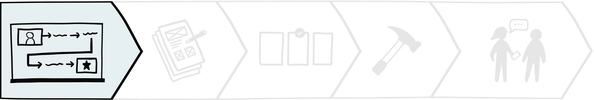
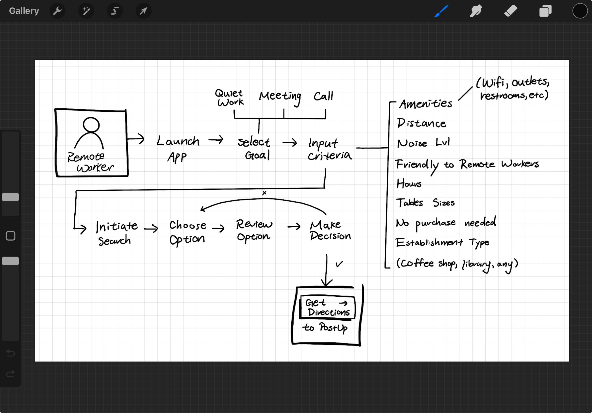
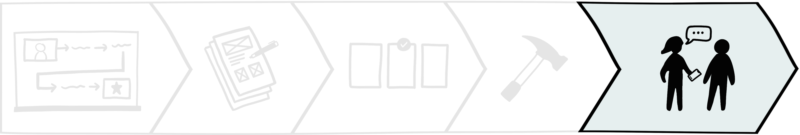

PostUp
Connecting remote workers to ideal public workspaces anywhere.
Involvement
- Product designer
- UX/UI designer
- Service designer
- Interaction designer
- UX writer
Disciplines
- UX/UI design
- Growth design
- Branding
- Product strategy
- Monetization strategy
Timeline
- December 2023
- 5-day design sprint
Tools

The challenge
PostUp is a startup building an online community for remote workers and freelancers to share tips and advice. The team identified a growing need for reliable information about public places—like libraries and coffee shops—where remote workers can be productive. Essential details, such as stable Wi-Fi, outlets, and seating availability, are hard to find using tools like Google and Yelp. Additionally, I uncovered an additional issue at large—a lack of suitable public workspaces. As a result, many waste valuable time searching for and visiting unsuitable locations, leaving them frustrated and unproductive.
The initial proposal
PostUp wanted me to design a subscription-based mobile solution in 5 days with the following scope and constraints:
Scope
- Solution must be a mobile-app
- $5.99 monthly subscription
- Feature existing spaces
Constraints
- Limited research materials
- No access to PostUp personel
- No additional iterations
- No additional testing
- No access to users
Designing a MVP prototype in 5 days
Using a modified version of Google Ventures' (GV) design sprint, I was able to rapidly prototype a solution. This modification helped a lot working solo!
The solution
The solution centralizes essential workspace details and integrates a seamless commute experience through a third-party API. Subscribers gain access to exclusive features, including table reservations and real-time crowd levels at partner locations. The monetization strategy supports an expanded range of workspace options, creating an additional revenue stream that boosts PostUp's scalability and fosters a positive Jump to finafeedback loop for growth.
Monday
Mapping the problem

user research
Reviewing PostUp's research
On Day 1, I kicked off the sprint by reviewing the limited research materials provided by PostUp. This included a slide deck with 8 interview quotes, a user persona, and a single recorded interview. With no access to additional research or users, I extracted the most relevant insights to guide my design decisions. Here's what I found:
- Remote workers need Wi-Fi, quiet environments, outlets, and restrooms
- They rely on online reviews and photos, which are often unreliable
- Many arrive at workspaces only to find no seating available
- Their needs vary by tasks: quiet work, meetings, calls, and duration of stay
Stable Wi-Fi, quiet environments, outlets, restrooms, and seating are essential for remote workers. They sift through reviews and photos for this info on Google and Yelp, which are often unreliable and/or unavailable.


I usually need to jump on the computer for a video chat, so I need to make sure the Wifi is good . . . there isn't too much background noise. — Andy

If a place has Wifi, outlets, and bathrooms—that's all need. If I need to buy some food or coffee to stay there, I really don't mind. — Claire

I like to know how crowded a place is. If I'm doing independent work, I don't want it to be super loud. If I'm meeting clients or coworkers, I want to be sure we can get a place to sit and talk. — James
Iterating a more effective user persona
Based on my insights, I realized the user persona PostUp provided didn’t capture the whole story. I also found it text-heavy and hard to scan, so I reworked it to better guide my design process.
Original
Iteration
- More detailed and comprehensive
- More scannable and readable
- Easier to reference during design
My new persona includes key details from user quotes and interviews. The process of reworking the persona helped me better understand Nina. My new persona helped me stay more focused on Nina’s specific needs throughout the sprint, ensuring the app was aligned with user goals.
Brainstorming an end-to-end experience for Nina
I mapped how the mobile solution could potentially be integrated into Nina's journey, where the solution would prioritize Nina’s specific work preferences and the tasks she’d perform. Based on my insights, I created a flow that allows her to filter workspaces by amenities like noise levels, distance, and seating availability.
With such a small research sample size, I began struggling to determine the flexibility and customization remote workers may need for varying personal preferences. At this point, I figured functionalities like customizable presets would address this, but I was nervous about feature creep.
- Select remote work goal: quiet work, meeting, call
- Adjust search filters: amenities, noise level, distance, table sizes, etc.
- Initiate search
Tuesday
Sketch
competitive research
Drawing inspiration from competitors
I wanted to create a clean interface with search and product comparison features, so I performed lightning demos of Airbnb, Google Maps, Credit Karma, and Betterment to gather insights into best practices and user expectations. I specifically selected screens that display features like search filters, search results, and individual products.
Among my demos, Airbnb was the winner. 🥳


Clean layout
Intuitive design
Clear structure
Clear typography
Easy navigation
Optimized user flow
ideation
Brainstorming 8 solutions in 8 minutes
Drawing from my lightning demos, I brainstormed solutions by diving into a Crazy Eights exercise, where I sketched a frame per minute over 8 minutes. I felt a bit intimidated at first, but I ended up really enjoying the process and found it really productive. All of these sketches inspired the remainder of my design process!
Finally, I selected the most promising screen from my sketches and created a 3-panel storyboard to illustrate the interactions before and after. I chose the search results screen as a hub for Nina's decision-making, centralizing essential information to expedite her process of elimination.
wednesday
Decide
storyboarding pt.2
Completing the journey with user stories
On day 3, I expanded the 3-panel storyboard into a detailed comic-style narrative of Nina's journey using PostUp in a new city. This helped me immerse myself in Nina's perspective to deepen empathy for her needs and identify potential features that could meet those needs.

Placing Nina in an unfamiliar city allowed me to anticipate diverse user behaviors and needs.
By asking "How might Nina react?" and "What actions might she take next?", I identified key touchpoints to develop user stories and flows. This approach aligns with my principles of creating scalable and adaptable solutions, which further developed my user flow. Here are some highlights:
What might Nina want to see when she opens PostUp?

Being in a new city, Nina likely has little knowledge of her
surroundings, so she's probably keen to explore nearby
workspaces. Therefore, the ideal home screen should show Nina
a map that visually displays available options around her
current location.
Where should Nina "search by task"?
Upon expanding my storyboard, I realized two design errors from days 1 and 2.

Day 1: Optimizing search process by taking users directly to search results after task-selection might backfire if the presets are even slight inaccurate.
Day 2: The lack of transparency behind the presets if located on the 'Discover' page might be confusing.

Solution: Create a 'Search page' that allows people to conduct a 'New search' or select 'Customizable presets'.
What if Nina realizes she has additional needs?
With a new 'Search' page, I was able to display the details on the preset filters to ensure transparency. As for my conflict regarding whether or not Nina should be able to adjust filters immediately after task selection, after reviewing my user research, I realized most people share the same preferences across all tasks! Being taken to a filters page each time Nina selects a preset could be counterproductive. She can also just conduct a new search. Besides, testing may reveal the ideal flow!

In addition to the workspace environment, what else might Nina want to learn?

The final highlight of my storyboard evolution was adding a 'Reviews' section for each workspace. After Nina learns about the workspace's details, she might want to see what other people have to say or seek more details, especially since that's what she's used to doing with her existing tools. For a more intuitive experience, users may navigate between the pages by swiping horizontally.
thursday
Prototype

It was finally time to design and prototype! As I reviewed my work so far, I realized I made a mistake: Nina's journey ends when she settles into the workspace, not when she chooses a workspace. To stay organized, I sketched a new map to adjust my scope and brainstormed a list of features before prototyping.
Leveraging verbal walkthroughs to explore unbuilt areas
I designed a limited prototype with only one user flow because I planned to leverage verbal walkthroughs as well given the time crunch. With only one shot at testing, I initially aimed to prototype multiple user flows to avoid task failures and most features. Instead, I planned on asking participants to describe how they would navigate and interact with any unbuilt areas.
Ommitting features for more accurate insights
Rather than building every feature, I left out the features below because 1) they weren’t explicitly requested during user research, but 2) lightning demos suggest they might be expected, given their presence in competitor tools.
-
Seating availability
This was mentioned by one interviewee. It could expedite a remote worker's journey and monetized.
-
Reservation system
This has great potential but its rarity in coffee shops is a challenge. It also could be monetized.
-
Home search bar
As a common user route, I anticipated some users opting for this route instead of the search page.
-
Popular times
Given its popularity in other apps, it could enhance the UX and boost competitive advantage.
Instead of testing these assumptions directly, I planned to ask questions like “What did you expect to see but didn’t?” and "What are some features that might help that you didn't see?" This would ensure user feedback reflects genuine remote worker needs and avoid false positives, such as users interacting with these features just because they were available.
Streamlining decisions
with efficient results.
2-step search flow
Users can explore nearby workspaces on the home screen or search by task. Since most remote workers share similar preferences, I designed preset filters to for common tasks to streamline the search process.
Intuitive commute experience
To support business trips, commute times are dynamically adjusted based on walkability score via Google Maps integration. Low walkability display driving durations, while high walkability show walking times.
Scannable workspace details upfront
I designed the search results to be scannable and comprehensive by presenting key details like suitable work, amenity icons, and interior photos. Users can assess workspaces without clicking into each listing.
Combatting choice paralysis.
Single-page for efficient navigation
I wanted to provide efficient navigation, prevent cognitive overload, and enhance trust and engagement. I consolidated my sketches into a single-page layout to prioritize displaying details above-the-fold, used a minimalistic design, stored additional details in "Info" icon buttons, and leveraged social proof by displaying each reviewer's occupation.
Comprehensive, scannable details
I crafted minimal, scannable copy and included "Info" icon buttons for additional details to simplify the interface. I was inspired by clothing size charts to ensure users have access to essential information without feeling overwhelmed.
Friday
Test

On my last day, I conducted remote usability testing over Zoom with 5 participants, including both college students and working professionals who frequently work in public spaces and use mobile apps to find locations. Overall, my participants loved the prototype! They didn't find any essential details missing and there was minimal confusion.
Design validation
- Users loved the intuitive navigation and quick access to workspace details
- Everyone praised the visual design
- All users completed tasks efficiently and wished the tool existed
Areas of improvement
- Some users found a few icons and labels confusing, but they acknowledged that the app provided unique details not available in their current solutions
- Minor suggestions included highlighting lighting and restroom availability
Here's an excerpt from the usability test with participant #1, where she offers positive feedback on the prototype after completing her given task:
final wrap-up
Iterations
Given my test findings, I believe that the prototype can be improved by incorporating a
few more features and further
optimizing
the user experience through reducing touchpoints.
- Remove the search page and add a reservations page
- Remove searching by type of work
- Implement filters directly on Discover page
- Add respective star rating to map icons for more context
- Add workspace detail on lighting
- Add workspace detail on restroom capacity
- Replace standardized details on work environment with explicit details
Business monetization strategy
I also brainstormed a monetization strategy that can increase business revenue streams for PostUp. Considering the growing trend toward remote work, I see a promising opportunity for a mutually beneficial collaboration between PostUp and local businesses. Therefore, I propose an additional subscription and referral model that invites businesses to become a “PostUp Partner” to access premium in-app business features below:
Reservation system
Only PostUp Partners can access the in-app table reservation
feature, enhancing user convenience and potentially attracting
more customers. Users may filter their search results for
locations that offer reservations.

Data analytics
PostUp can offer valuable insights derived from user behavior, like traffic trends and user preferences, enabling partners to better understand their customer base, thereby allowing them to tailor their services and improve customer satisfaction.
Exclusive promotions
PostUp partners can offer exclusive in-app promotions, encouraging engagement and customer acquisition. Subscribers may filter for locations with ongoing promotions.
Rewards system
Partners may offer exclusive rewards for users. Using a unique QR code, users may earn points and stamps for their activities, which can be redeemed for tangible rewards, encouraging frequent use and loyalty.
Conclusion
Overall, my strategies aim to establish a sustainable revenue model that enhances the
overall remote working experience throughout their user journey. This
collaboration could incentivize businesses to enhance their
amenities, catering to remote workers and in turn enriching the
overall user experience for Postup subscribers.
In sum, these strategies offer additional revenue streams for
PostUp while boosting the app's value proposition for both users and business partners.
Final Prototype
Streamlined search process
- Replaced search page in bottom navigation with reservations
- Added search bar on search page
- Added quick filter buttons below search bar
- Added rating to location icons
- Replaced suitable work icons with clear labels
Enhanced workspace profile
- Relocated interactive buttons to maximize content above-the-fold
- Enhanced typography for readibility
- Refined work environment labels for clarity
- Reorganized content hierarchy and added new details
- Added a reservation system feature
- Added menu items section
Next Steps
Shipping the MVP
If I had more time, I would conduct another round of usability
testing to validate my
iterations. I would also
further optimize the user experience
and
iterate screens for the rewards system, exclusive promotions, and
reservation system. I would
extend and complete the user flow
to include reserving a table and the
final interaction with the app—earn PostUp points
in-store with an purchase at an official PostUp partner location. If I had a team to ship
this prototype, I would implement the designs from my monetization strategy and develop
the user flow for PostUp partners to integrate them into the ecosystem.
Personal growth
A long-term goal of mine is to increasingly streamline my
design process. I aim to learn and develop efficient design
strategies to streamline the product design cycle, maximizing
company resources and reducing business costs. In other words, I
want to
learn to design as efficiently as possible to cut down business
costs and accelerate business growth. Given the success of testing via verbal
walkthroughs, I want to learn more cost-effective
ways of usability testing.
Reflection
Challenges
This was my first time conducting a design sprint, and writing this case study helped me realize how much I've grown since my previous project, TasteBuds, which has been a very affirming experience. Challenging myself to develop a monetization strategy for a scalable, resilient product was incredibly rewarding. Leveraging my business acumen to create a user-friendly and profitable product was really exciting. This definitely reinforced my choice of product design over solely UX design, given my diverse skill set and appreciation for the entire product lifecycle.
Lessons Learned
User behavior and expectations
As I progress as a product designer, understanding user behavior and expectations has empowered me to anticipate needs and optimize usability tests. My favorite parts of this project was further streamlining my design process and navigating project constraints, especially in creating more effective user flows and designing cost-effective usability tests to maximize business revenue.
Expanding on TasteBuds
Designing PostUp gave me the opportunity to expand my prior case
study on my previous project TasteBuds—a social
recommendation mobile app that connects diners with trusted
friends and personalized suggestions. This sprint validated my
research and test insights on user behavior and motivations in TasteBuds. Both
studies taught me the importance of novelty and innovation to
enhance user engagement and prioritize user-centricity. This
experience definitely reinforced my commitment to research and
anticipatory design, boosting my confidence in pursuing
innovation!
Overall, this was a very rewarding experience, and I can't wait to apply my learnings in my future projects!
Thank you!
Thank you for reading my case study! Feel free to experience my
prototype: Find somewhere quiet to do some remote work nearby,
reserve a table, and scan your profile QR code to earn points on an
in-person purchase. Open the prototype in a new page
here.
Feel
free to reach out to me on
LinkedIn
or via email at
mhu.contact@gmail.com
to share feedback and/or discuss collaboration opportunities. Any
and all communication is appreciated!